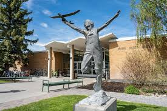

Crossroads
Manwaring Center Floor 1
A large open space with plenty of tables perfect for group projects or spreading out study materials.
Amphitheater
Outdoor space between the Manwaring Center and McKay Library
An open, outdoor space perfect for enjoying the sunshine while working with others.


Austin Commons
First floor Austin entrance
A medium/small open space with tables fit for small group work. Between classes there is a good amount of foot traffic.
STC Commons
First floor of the Science and Technology Center
A large open space with a mix of large round tables perfect for group work and smaller high-top tables for individual work.